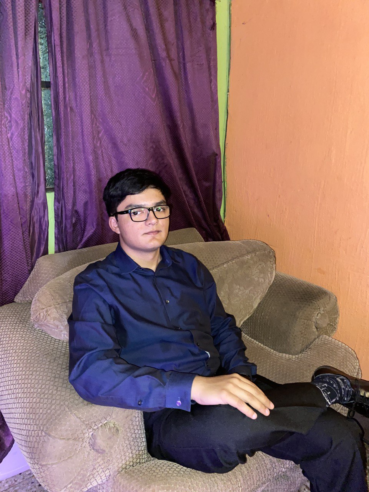

 Mi nombre es Octavio Corzo, nací el 28 de agosto del año 2005 en la ciudad capital de Guatemala. Actualmente tengo 17 años, curso el grado de sexto diversificado en Kinal y vivo con mis padres, Luis Enrique Corzo Houben y Jeydy Corina Reyes Vicente.
A la edad de 4 años me operaron de la vista por un problema de pseudoestrabismo, ese mismo año empecé a ir a la guarderilla donde estudie pre primaria, a la edad de 6 años entre a estudiar a la primaria. A finales de ese año tuve la oportunidad de conocer Costa Rica, mi familia y yo hicimos un viaje de 3 días en carro hasta llegar al mencionado país, ahí pude concer las hermosas playas de Costa Rica y a su gente tan agradable.
Entre noviembre y enero de 2013 mi familia y yo vivimos en Nicaragua, en un barrio muy bonito donde había un parque al que ibamos a hacer ejercicio y a jugar todas las tardes, fue una de las experiencias mas bonitas de mi vida y que guardo con mucho cariño en mi corazón.
En el año 2017 me gradué de sexto primaria, en el siguiente año empecé a estudiar básicos en el INEB Tecún Umán de la zona 11 ahí conocí varios amigos con los que me sigo llevando hasta la fecha, en el año 2020 empezaron las clases virtuales por la pandemia del covid-19, en 2021 empecé a estudiar en Kinal la carrera de informática de forma virtual apesar de tantos altos y bajos fue uno de mis mejores años. En 2022 empecé a estudiar de forma semi presencial en Kinal, al principio yendo 1 día por semana, luego 2 y el último mes fuimos de forma 100% presencial.
Para este año 2023 espero terminar de adquirir los conocimientos necesarios para poder ser un buen programador, al igual que sacar buenas calificaciones para poder realizar mis prácticas profesionales de forma éxitosa y así poder tener la posibilidad de conseguir un empleo donde pueda adquirir experiencia y empezar a hacer mi vida profesional.